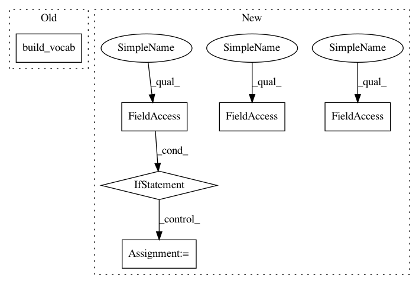

9108041562e1b7a4fb159a8c0afe0caf54fe2a6d,snli/train.py,,,#,16
Before Change
train, dev, test = datasets.SNLI.splits(inputs, answers)
inputs.build_vocab(train, dev, test, lower=args.lower)
if args.word_vectors:
if os.path.isfile(args.vector_cache):
inputs.vocab.vectors = torch.load(args.vector_cache)
else:
After Change
if config.birnn:
config.n_cells *= 2
if args.resume_snapshot:
model = torch.load(args.resume_snapshot, map_location=lambda storage, locatoin: storage.cuda(args.gpu))
else:
model = SNLIClassifier(config)
if args.word_vectors:
model.embed.weight.data = inputs.vocab.vectors
model.cuda(args.gpu)
criterion = nn.CrossEntropyLoss()
opt = O.Adam(model.parameters(), lr=args.lr)
iterations = 0
In pattern: SUPERPATTERN
Frequency: 4
Non-data size: 6
Instances
Project Name: OpenNMT/OpenNMT-py
Commit Name: 9108041562e1b7a4fb159a8c0afe0caf54fe2a6d
Time: 2017-02-06
Author: bryan.mccann.is@gmail.com
File Name: snli/train.py
Class Name:
Method Name:
Project Name: OpenNMT/OpenNMT-py
Commit Name: 92d566ab31e5e341d79209d96aef2c2e5d54fd0e
Time: 2017-01-23
Author: bryan.mccann.is@gmail.com
File Name: snli/train.py
Class Name:
Method Name:
Project Name: OpenNMT/OpenNMT-py
Commit Name: 9108041562e1b7a4fb159a8c0afe0caf54fe2a6d
Time: 2017-02-06
Author: bryan.mccann.is@gmail.com
File Name: snli/train.py
Class Name:
Method Name: